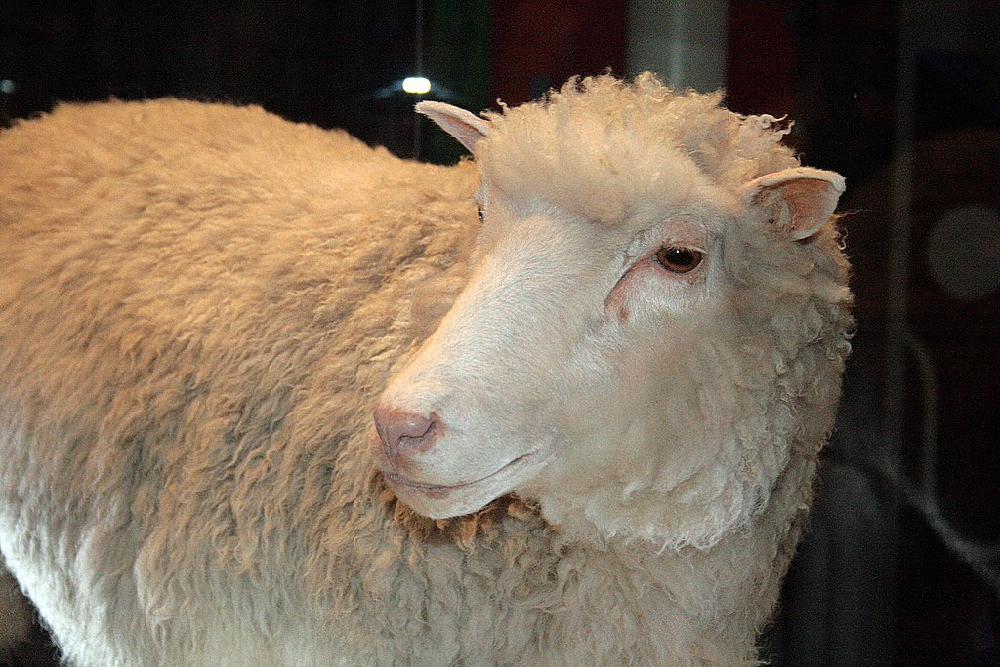

动物细胞工程（三）：核移植技术与克隆动物
本期导读
动物细胞工程（三） · 重构胚 · 克隆羊多莉

视频原话 · 导读3 句
- 同学们好！这节课梳理人教版选择性必修三第二章第二节的第三部分——动物体细胞核移植技术和克隆动物。10.4s
- 高考常考核移植的操作流程、卵母细胞为什么要培养到MⅡ期，以及克隆动物遗传物质的来源。9.0s
- 我们按六个考点梳理，每个考点都讲清楚怎么考、怎么做。5.5s
核移植的概念01#
核移植：将动物一个细胞的细胞核移入去核的卵母细胞中，使重组细胞发育成新胚胎，继而发育成动物个体
克隆动物：用核移植方法得到的动物（1996 年，克隆羊多莉）
| 比较项目 | 胚胎细胞核移植 | 体细胞核移植 |
|---|---|---|
| 供核细胞 | 胚胎细胞 | 体细胞 |
| 分化程度 | 低 | 高 |
| 难度 | 相对容易 | 明显更高 |
解题方法
核移植的原理是动物细胞核的全能性，注意是“细胞核”，不是动物细胞
视频原话5 句
- 考点一，核移植的概念。把动物一个细胞的细胞核，移入去核的卵母细胞中，使这个重新组合的细胞发育成新胚胎，继而发育成动物个体。12.8s
- 用核移植方法得到的动物，叫作克隆动物。1996年诞生的克隆羊多莉，是第一只体细胞克隆哺乳动物。10.0s
- 哺乳动物核移植分为胚胎细胞核移植和体细胞核移植。5.4s
- 体细胞核移植的难度明显更高，因为体细胞分化程度高，恢复其全能性十分困难。7.9s
- 考法：问原理。解题方法：核移植的原理是动物细胞核的全能性，注意是“细胞核”，不是动物细胞。9.7s
体细胞核移植过程02#
解题方法
六个关键词：培养到 MⅡ 期 → 去核 → 注入 → 融合 → 激活 → 胚胎移植
视频原话6 句
- 考点二，体细胞核移植的过程。采集卵母细胞，在体外培养到MⅡ期。7.4s
- 通过显微操作去核。另一边，培养供体的体细胞。5.2s
- 把供体细胞注入去核的卵母细胞，用电融合法使两细胞融合，形成重构胚。7.4s
- 用物理或化学方法激活重构胚，比如电刺激、钙离子载体、乙醇等，使它完成细胞分裂和发育进程。9.9s
- 最后，把胚胎移植到代孕母体中，生出克隆动物。5.0s
- 考法：流程排序。解题方法：记住六个关键词——培养到MⅡ期、去核、注入、融合、激活、胚胎移植。11.2s
为何用MⅡ卵母细胞03#
体积大
便于显微操作
细胞质特殊
含有促使细胞核全能性表达的物质
营养丰富
为早期胚胎发育提供营养
MⅡ 期没有核膜，“去核”去除的是纺锤体—染色体复合物
易错
去核的目的：保证克隆动物的核遗传物质全部来自供体
视频原话5 句
- 考点三，为什么用MⅡ期卵母细胞做受体。第一，卵母细胞体积大，便于操作。8.2s
- 第二，细胞质中含有促使细胞核全能性表达的物质。5.3s
- 第三，营养物质丰富，能为早期胚胎发育提供营养。5.4s
- 另外，MⅡ期的卵母细胞没有核膜，所谓“去核”，去除的其实是纺锤体—染色体复合物。8.3s
- 易错：去核的目的，是保证克隆动物的核遗传物质全部来自供体。6.2s
遗传物质的来源04#
解题方法
性别和主要性状看供核个体；克隆属于无性繁殖
视频原话4 句
- 考点四，克隆动物遗传物质的来源。核基因，全部来自供体细胞。6.8s
- 细胞质基因，比如线粒体DNA，主要来自去核的卵母细胞，也就是受体。7.0s
- 代孕母体只提供{胚胎发育的场所|brown}，不提供遗传物质。5.2s
- 解题方法：判断克隆动物的性别和主要性状，看供核的个体；克隆动物属于无性繁殖。8.4s
核移植的应用05#
畜牧业
加速家畜遗传改良
促进优良畜群繁育
促进优良畜群繁育
医药卫生
转基因克隆动物作生物反应器，生产医用蛋白
提供异种移植的器官
提供异种移植的器官
治疗性克隆
病人体细胞核移植 → 胚胎干细胞 → 分化成所需细胞、组织
保护濒危物种
增加存活数量
体细胞克隆猴“中中”“华华”
体细胞克隆猴“中中”“华华”
易错
核移植技术还不成熟：成功率非常低，克隆动物存在健康问题
视频原话5 句
- 考点五，核移植技术的应用。畜牧业上，可以加速家畜遗传改良进程，促进优良畜群繁育。9.2s
- 医药卫生上，转基因克隆动物可以作为生物反应器，生产医用蛋白；克隆动物的组织器官可作为异种移植的供体。10.1s
- 治疗性克隆：用病人的体细胞核移植获得胚胎干细胞，诱导分化成所需的细胞、组织，用于治疗。9.6s
- 核移植还可以用来保护濒危物种，增加它们的存活数量。我国科学家还获得了体细胞克隆猴“中中”和“华华”。10.4s
- 易错：核移植技术还存在问题，比如成功率非常低，克隆动物存在健康问题。7.7s
与供体不同的原因06#
① 细胞质基因
来自受体卵母细胞，不来自供体
② 环境因素
表型 = 基因型 + 环境
③ 变异
发育过程中可能发生基因突变等
解题方法
从细胞质遗传和环境影响两个方面作答，就能拿到主要分数
视频原话4 句
- 考点六，克隆动物与供体的性状为什么不完全相同？原因一：克隆动物的细胞质基因来自受体卵母细胞。10.1s
- 原因二：生物的性状还受环境因素的影响，表现型是基因型和环境共同作用的结果。8.3s
- 原因三：在发育过程中，可能发生基因突变等变异。5.2s
- 考法：问原因。解题方法：从“细胞质遗传、环境影响”两个方面作答，就能拿到主要分数。9.0s
易错速查✓
先自己判断，再点按钮查看对错与解析。
- 1体细胞核移植比胚胎细胞核移植更容易说法错误：体细胞分化程度高，难度明显更大
- 2受体卵母细胞要培养到MⅡ期说法正确。
- 3去核去除的是完整的细胞核说法错误：去除的是纺锤体—染色体复合物
- 4克隆动物的性别与供核个体相同说法正确。
- 5克隆动物与供体性状完全相同说法错误：细胞质基因、环境等会造成差异
- 6体细胞核移植体现了动物细胞核的全能性说法正确。
核来自供体，质来自受体！
视频原话 · 易错速查5 句
- 最后，用六道判断题检验一下。3.6s
- 判断一：体细胞核移植比胚胎细胞核移植更容易？错。判断二：受体卵母细胞要培养到MⅡ期？对。11.4s
- 判断三：去核去除的是完整的细胞核？错，是纺锤体—染色体复合物。判断四：克隆动物的性别与供核个体相同？对。12.9s
- 判断五：克隆动物与供体性状完全相同？错。判断六：体细胞核移植体现了动物细胞核的全能性？对。11.4s
- 六个考点串成一条线：核来自供体，质来自受体。我们下期再见！6.8s
图片来源
图片来源：Wikimedia Commons —— Toni Barros《Dolly face closeup》CC BY-SA 2.0
Photo: Toni Barros, CC BY-SA 2.0